使用小程序
一、电路介绍
电路图如图1 所示，电路由IC1 单片机PIC16C505- 20P 及少量的外围元件组成。开关SW1为画面切换按钮；SW2 为水银开关，可在摇晃光棒时触发电路工作。电阻R1～R6 为发光二极管的限流电阻。电阻R7、R8 分别为集成电路触发端的上拉电阻。LD1～6 为组字的发光二极管，它们在印刷电路板上排成一条直线。
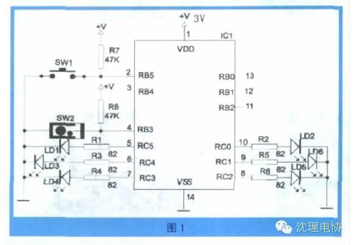
使用摇字棒时，用手握紧光棒，左右摇晃，水银开关就会频繁触发电路，使6 只发光二极管按照程序点亮，组成“HELLO”等字符串，如图2 所示。
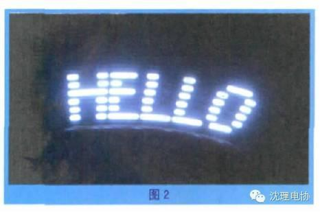
二、光棒显示文字的原理
光棒利用人眼的视觉暂留效应，显示平面图形。如果6 只竖直排列成一条直线的亮点快速水平移动，看起来就不再是一条发亮的光棒，而是一片亮点。如果让6 只发光二极管在快速移动的过程中，每个二极管在不同的时刻根据一个图形在该处的状况来发光，由于人眼睛的视觉暂留效应，就可以看见光棒组成了这个图形。
光棒组成图形有两个条件，一个是每个发光二极管要按照预先制定的程序定时发光；二是必须按照一定的频率摇动光棒。电路的控制芯片IC1 已经内置了多达几十种字符串的程序，使用时可按动一次开关SW1（不要按住不动）逐个选择不同的文字。
三、制作过程
在套件提供的印刷电路板上组装并焊接，完成光棒的制作；套件如图3 所示。制作步骤如下：
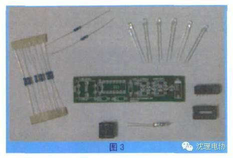
步骤1. 根据色环辨认82Ω 和47k 两种电阻，再将它们装入印刷电路板，如图4所示。
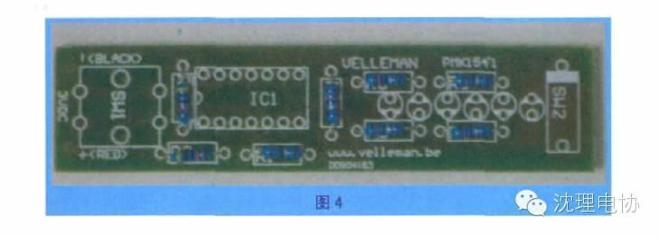
步骤2. 插入集成电路IC1 的插座。要按照印刷线路板上面半圆形缺口的指示方向插入插座，如图5、图6 所示。
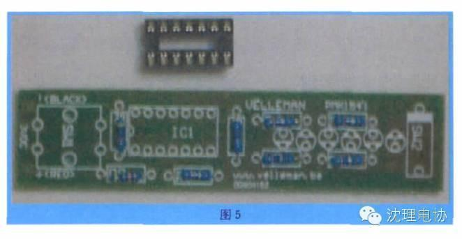
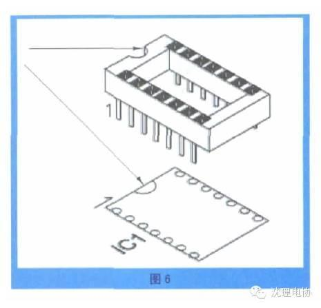
步骤3. 安装按钮开关SW1，如图7所示。
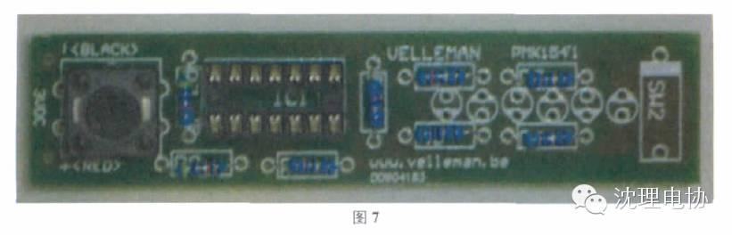
步骤4. 安装水银开关SW2。为了保证摇动光棒时，字符串及图形从左到右正确显示，水银开关应大体上水平放置；而且头在右边，接线在左边；如图8、图9所示。
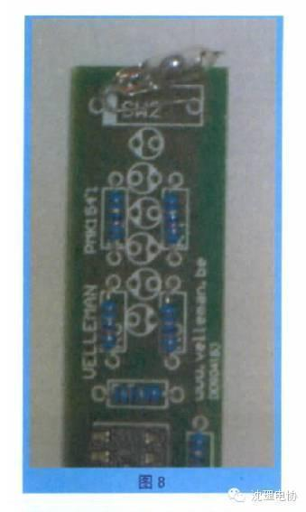 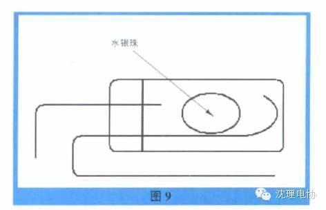
步骤5. 安装6 只发光二极管；要注意二极管的正负极不得接反。二极管管脚一长一短，长为正，短为负。印刷线路板上有两个孔，靠近圆缺的孔为负极，如图10、图11 所示。
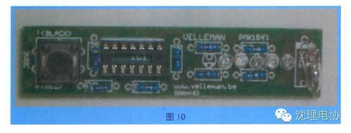
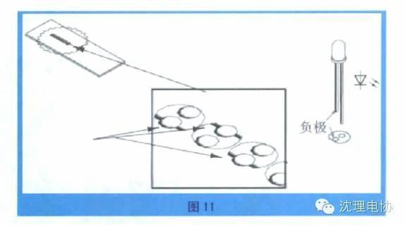
步骤6. 焊接印刷线路板焊接时所用电烙铁最大不超过40W。以焊接电阻为例，焊接注意事项如图12 所示。
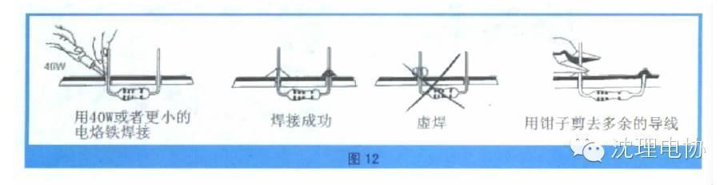
步骤7. 焊接电源线焊接电池盒导线，要区分电池盒两根引线的极性；红线为正极，黑线为负极，分别焊接在线路板相应的焊点上，如图13 所示。
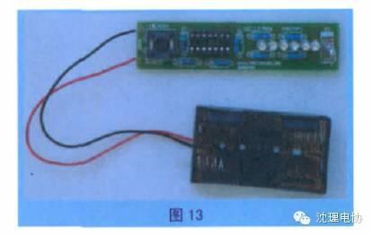
步骤8. 插入集成电路IC1，要使IC1 上面的半圆形标记与插座上的标记放在同侧，如图14 所示。
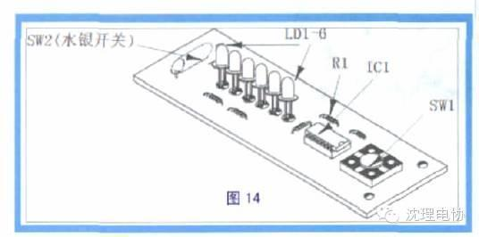
四、通电测试
在电池盒内装入两节5号电池，即可测试了；如图15 所示。
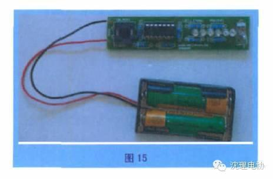
为了便于使用，可将电池盒用胶带固定在印刷电路板背面。选一处比较暗的地方，用手握住光棒，左右摇晃，对面的人就可以看到光棒组成的字符串。再按一下SW1，就可以组成另一个字符串；如图16、图17 所示。
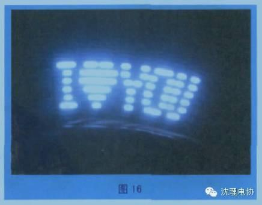
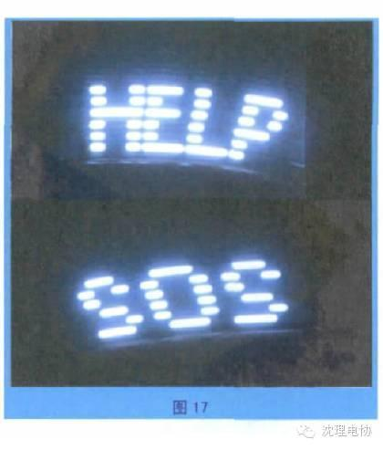
编辑/高星华